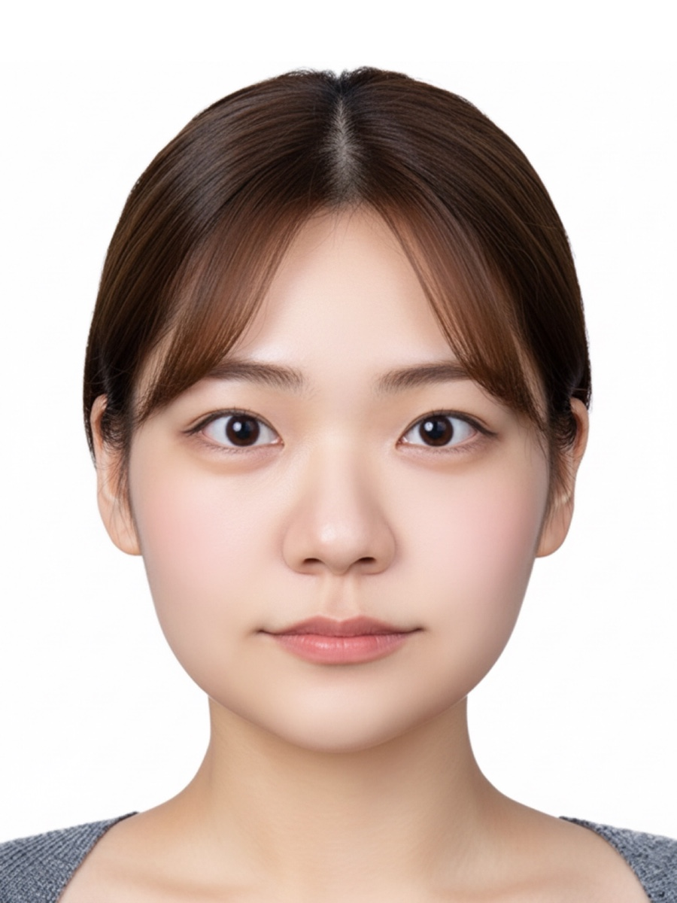
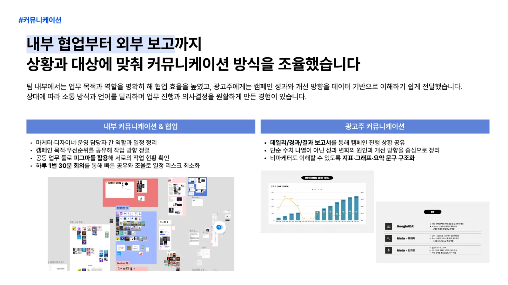

웹을 직접 만든 PM
2년간 사내 ERP와 메일 시스템의 UI를 디자인하고 퍼블리싱했습니다. 요청이 화면과 코드로 바뀌는 과정을 이해합니다.
UI/UXHTML/CSSResponsive
Junior PM
2년간 웹을 직접 디자인·퍼블리싱하고 운영 이슈까지 경험했습니다. 고객의 요청을 실행 가능한 업무로 구조화하고, AI를 활용해 기획·문서·QA의 속도를 높입니다.

Why me
고객, 디자인, 개발, 데이터. 서로 다른 관점을 하나의 실행 흐름으로 연결합니다.
2년간 사내 ERP와 메일 시스템의 UI를 디자인하고 퍼블리싱했습니다. 요청이 화면과 코드로 바뀌는 과정을 이해합니다.
리서치와 문서 초안부터 프로토타입·콘텐츠 제작까지 AI를 활용하고, 정확성과 구현 가능성은 직접 검증합니다.
시스템 CS와 팀 리딩 경험을 바탕으로 고객의 언어를 제작팀이 실행할 수 있는 기준과 작업으로 구체화합니다.
시각적 완성도와 반응형 품질을 놓치지 않으면서, 마케팅 데이터로 웹사이트의 비즈니스 맥락까지 이해합니다.
Experience
Global education · Slovakia · United States
웹 퍼블리셔 · 사원
팀 리드 · 전략·콘텐츠·광고 운영·보고
Selected work
문제와 맥락을 파악하고, 필요한 일을 구조화한 뒤, 직접 실행하고 검증한 경험입니다.
Work experience · 2023-2025
Web system · UI · Operations
ERP와 사내 메일 시스템의 화면을 디자인하고 퍼블리싱했습니다. 웹사이트 리뉴얼 기획과 시스템 CS까지 경험하며 요청·구현·운영이 분리되지 않는다는 것을 배웠습니다.
Side project · AI-assisted MVP
Concept · Build · Deploy
사용자가 성경 구절을 입력하면 묵상을 위한 맥락을 제공하는 웹 서비스입니다. AI와 웹 기술을 활용해 아이디어를 화면과 기능으로 구체화하고 실제 서비스 형태로 배포했습니다.
Team project · 2025.11-12
Lead · Measure · Report
4인 팀의 리더로 강점 기반 역할 배분과 진행 점검을 맡고, 캠페인 기획·콘텐츠·광고 운영·보고에 참여했습니다. 저성과 소재를 중단하고 확인된 방향에 집중하는 실행 루프를 경험했습니다.
트래픽 캠페인 실제 집행 기준 · 4인 팀 공동 결과

More web work
브랜드 스토리, 상품 카테고리와 콘텐츠 영역을 데스크톱·모바일 환경에 맞춰 구현했습니다.
AI workflow
도구의 이름보다 중요한 것은 목적을 설계하고, 결과를 검증하고, 다음 업무에 재사용하는 방식입니다.
목표·사용자·제약조건·참고 자료를 먼저 구조화합니다.
요구사항, 일정, 콘텐츠, 화면과 코드의 첫 버전을 빠르게 만듭니다.
사실관계, 브랜드 일관성, 반응형 품질과 구현 가능성을 직접 확인합니다.
결정과 결과를 Notion 템플릿·체크리스트로 남겨 다음 프로젝트에 연결합니다.
Example outputs
요구사항 초안 · 회의 요약 · 작업 목록 · 콘텐츠 구조 · QA 체크리스트 · 웹 프로토타입민감정보는 분리하고, 사실과 구현 가능성은 직접 확인합니다.
How I learn
“하나를 배우면 둘로 연결하고,
열 번 실행해 업무로 만드는 사람.”
퍼블리싱에서 시작해 UI 디자인과 시스템 운영을 익혔고, 데이터 마케팅과 AI 제작으로 실행 범위를 넓혔습니다.
PM 직무는 새로운 도메인이지만, 웹 구조를 이해하는 기반과 AI를 활용한 학습 루프로 빠르게 익히고 체크리스트와 문서로 남기겠습니다.
Toolkit & language
Languages
Let's build the next store
웹 제작 경험과 AI 실행력을 바탕으로, 고객과 제작팀 사이의 흐름을 선명하게 만들겠습니다.
Notion archive에서 전체 작업 보기